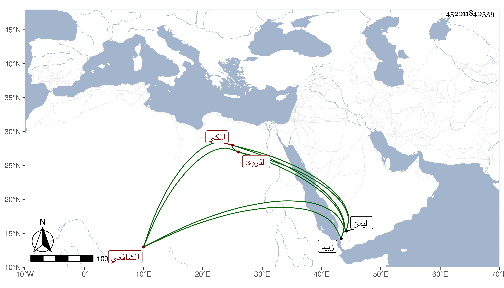

0902Sakhawi.DawLamic.ITO20230111-ara1.EIS1600.452011840539
Biography ID: 452011840539
205
أبو بكر بن محمد بن أبي بكر بن علي بن يوسف الفخر بن الجمال الذروي الأصل المكي الشافعي ابن عم الذي قبله والماضي أبوه ويعرف بالمرشدي أيضا . حفظ المنهاج والمختصر الأصلي وغيرهما واشتغل بالفقه والنحو وكثرت عنايته بالأدب وكان ذا معرفة به وبغيره وله نظم حسن ومجاميع مفيدة وكان الجمال بن موسى المراكشي كثير الاستحسان لنظمه ودخل غير مرة اليمن للاسترزاق فأدركه أجله بزبيد يوم عرفة سنة عشرين وقد جاز الثلاثين بيسير . ذكره الفاسي أيضا .
